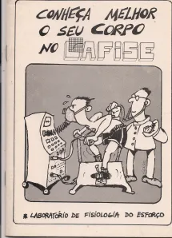
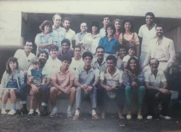
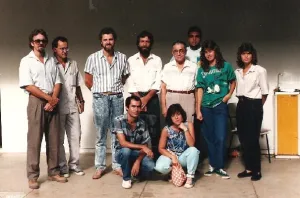
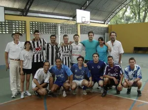
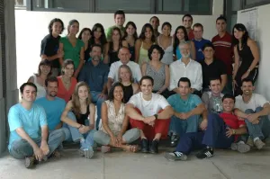

História do Laboratório
Conheça a trajetória e evolução do LAFISE desde sua criação
O Laboratório de Fisiologia do Exercício (LAFISE), fundado no ano de 1976, é um dos laboratórios pioneiros desse campo de conhecimento no Brasil.
A ideia de implantação de um laboratório de fisiologia do esforço (este era o termo difundido na época) na Escola de Educação Física da UFMG é de 1973, a partir de uma aliança entre professores (especialmente os médicos e os coronéis) daquela escola e o governo militar (Ministério da Educação – Secretaria do Desporto). A implantação do laboratório fazia parte de um projeto nacional para o desenvolvimento do esporte competitivo, para a detecção e promoção de talentos esportivos, denominado "Projeto Brasil". Entretanto, nesse primeiro momento, além das condições estruturais, a Escola não dispunha de material humano, isto é, cientistas especialistas em fisiologia do esforço, para dar início às atividades. Foi somente com a vinda do médico Luiz Oswaldo Carneiro Rodrigues, professor auxiliar de ensino em Clínica Médica na Faculdade de Medicina da UFMG, que as atividades se iniciaram. Uma característica observada foi que, desde aquele início, buscou-se formar uma comunidade científica em torno do laboratório, onde vários graduandos em Educação Física, alunos de monitoria e outros professores interessados, como o então professor de atletismo Emerson Silami Garcia, colaboravam nas atividades de pesquisa, nas discussões durante as reuniões científicas e nas publicações em congressos e periódicos.

Desde a sua criação, os pesquisadores do LAFISE vêm estudando os mecanismos da fadiga durante o exercício físico. Vários projetos envolvendo variáveis cardiorrespiratórias, metabólicas e termorregulatórias foram realizados com o objetivo de compreender as razões fisiológicas que levam à interrupção de um determinado exercício físico. Desde 1986, as questões relacionadas com a termorregulação têm recebido maior atenção no LAFISE, com a realização de trabalho pioneiro pelo professor Nilo Resende Viana Lima, sob supervisão do professor Luiz Oswaldo Carneiro Rodrigues. O projeto, do qual a atual professora Danusa Dias Soares fez parte como bolsista de iniciação científica, intitulava-se "Composição corporal, temperatura corporal e tempo de reação".

10 anos de LAFISE - Maio de 1986

Final da década de 80
Um fato importante na história do LAFISE foi a criação, em 1989, do Programa de Pós-Graduação em Educação Física na UFMG (atualmente denominado Programa de Pós-graduação em Ciências do Esporte). Além disso, ocorreu um processo de delimitação das pesquisas que se deveu principalmente à qualificação dos principais cientistas do laboratório como mestres e doutores no país e no exterior. Ressalta-se os doutorados do Prof. Emerson Silami Garcia nos Estados Unidos (1986), do Prof. Luiz Oswaldo Carneiro Rodrigues na UNIFESP (1992), do Prof. Luciano Sales Prado na Alemanha (1996), do Prof. Nilo Resende Viana Lima (2000) e da Profa. Danusa Dias Soares (2004 – com estágio sanduíche na França) na UFMG. Os estudos dos nossos cientistas enfatizavam especificamente os conhecimentos da fisiologia do exercício (e não mais do esforço).
O ano de 1994 foi o marco de início dos estudos que passaram a utilizar a experimentação com animais, fruto da aliança do LAFISE com o Laboratório de Endocrinologia e Metabolismo (ICB/UFMG). Isso aconteceu principalmente devido aos esforços do Prof. Nilo. No ano de 1995, a aquisição da primeira Câmara Ambiental pelo LAFISE, através de projeto do Prof. Emerson, permitiu grandes avanços nas pesquisas realizadas no laboratório.
Em 1997, ocorreu a vinculação do LAFISE à rede CENESP (Centros de Excelência Esportiva), órgão de fomento ao esporte nacional, pertencente ao Ministério dos Esportes, com centros localizados em várias regiões do Brasil. Com essa vinculação, observou-se a reminiscência da ideia de se investigar as relações entre o desempenho esportivo e a fisiologia do exercício nos estudos desenvolvidos no LAFISE.

Time de futebol do LAFISE

30 anos de LAFISE
Nesses últimos anos de pesquisa, as atividades do LAFISE tornaram-se mais numerosas e qualificadas. As principais linhas de pesquisa são:
- Balanço hídrico durante exercícios físicos.
- Intensidade do esforço e gasto calórico no futebol.
- Marcadores de estresse e alterações imunológicas relacionadas ao exercício físico.
- Metabolismo, termorregulação e fadiga durante o exercício físico.
Atualmente, o LAFISE possui uma comunidade científica mais autônoma, composta por doutores, pós-doutorandos, pós-graduandos e alunos de iniciação científica. Destaca-se a recente admissão do Professor Doutor Samuel Penna Wanner.
E, assim, a história continua…
50 Anos de História em Números
50+
Artigos Científicos
100+
Pesquisas Realizadas
30+
Pesquisadores Formados
15
Equipamentos Especializados
10
Parcerias Internacionais
500+
Participantes de Pesquisa